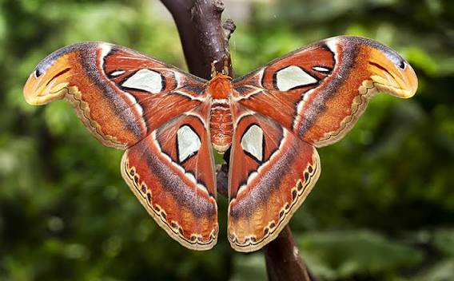
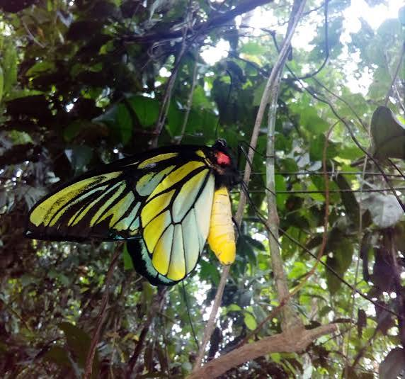

The Insects of Papua New Guinea
Atlas Moth

- The Atlas moth is one of the largest moths in the world, found in the rainforests of Papua New Guinea.
It is known for its large size and distinctive wing patterns.
Blue Morpho
- The Blue Morpho is a striking butterfly known for its iridescent blue wings.
It is found in the tropical forests of Papua New Guinea and other parts of South America.
Queen Alexanderia butterfly

- The Queen Alexanderia is a large butterfly found in the rainforests of Papua New Guinea.
It is known for its impressive size and distinctive wing patterns.